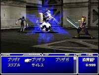

|

Review

Game Type: RPG
A traditional turn-based RPG (don't give me that ATBS bullshit, it's
still turn-based) from the series that established the tradition. You walk
around, randomly encounter enemies, choose appropriate spells or attacks
from a menu, etc. There are also lots of action subgames thrown in like
snowboard racing and a Road Rash-like sequence on a motorcycle.
Gameplay: 70/100
To be frank, this is probably the worst Final Fantasy game yet in
terms of gameplay, mostly due to poor control. The dungeons and towns are
all 2D bitmaps you're supposed to navigate in 3D. Often you can't even see
areas you can walk on or climb up, forcing you to "feel the walls" to find
a path. The new polygonal battle sequences have wild camera angles, too,
making it difficult to highlight the right target with the cursor. There
is more emphasis than ever on silly subgames, some of which are fantastic
but most of which are just an annoyance to figure out.
That's not to say Square did everything wrong, though. The new Materia
system allows for lots of creativity in equipping your characters (you can
assign elemental attributes to weapons and armor, make characters counter
with a special command of your choice, and more). The zillions of
spells and all the special abilities like Control that made FF6/3 so cool
are back. It's also quite long, about 60 hours to explore thoroughly.
Graphics: 95/100
Yow! Now this is where Square really came through. The graphic
engine isn't that big a breakthrough; only about 20fps. But the detail and
quality of animation on the hundreds of polygon skeletons for characters,
enemies, and spells is truly amazing. Cast a summon spell when you've got
some friends in the room and there won't be one whose jaw doesn't drop.
And though the subgames only feature flat-shaded polygons they still look
great (think Tobal).
Sound: 80/100
The sound effects are of pretty decent quality, but some are a bit
annoying, including a couple used in almost every battle. The tunes don't
exactly stick in your head (like some of FF6's did), but the soundtrack
once again shows off composer Nobuo Uematsu's creative ability above all
else. (The final boss has a full-scale opera score going, complete with
chorus.)
Overall: 80/100
I would have liked to give this game a higher rating but FF7's
failings in the all-important control department drop its score quite a
bit. It nonetheless features enough new strategy to save the playability.
The beautiful graphics and music don't hurt, either. And even though I had
to rely on translations to understand the story, I feel I can safely say
that FF7 has the best-told storyline of any console game, ever. You are
strongly encouraged to purchase it when it's released in English (American
release date 9/7/97), or even to import it and muddle through the Japanese
text (you can use the swap method since each disc boots separately). This
game further blurs the lines between video games and art, and will be
talked about long after its release.
|